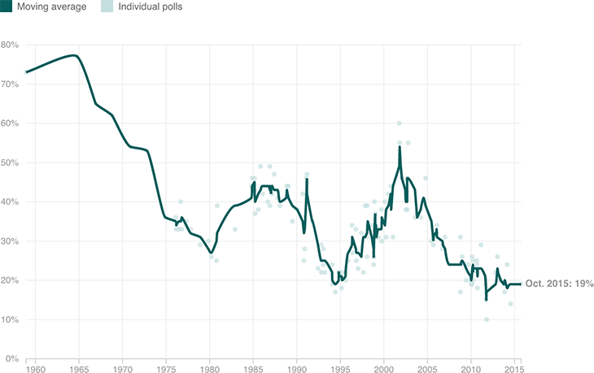

Americans’ Plummeting Trust In Government
The share of Americans who say they trust the government “just about always” or “most of the time” has fallen to 19 percent, less than one-third of its level back in the 1960s.
